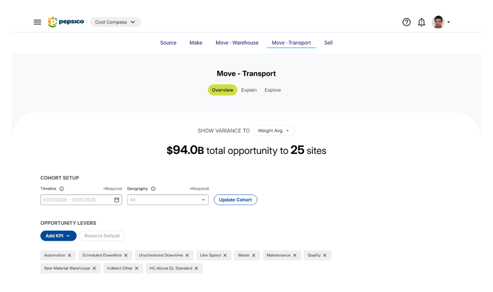

Cost Compass · CTX analytics suite
I brought an agency analytics concept into the CTX suite in two weeks, without losing its depth.
Cost Compass is a cost-benchmarking tool in PepsiCo’s CTX analytics suite. I led the redesign with a consulting-group designer, then implemented refinements with product and engineering.
TL;DR

The stakes
The interface hid the benchmarking insight.
The key insight
I separated structural problems from styling problems. Tabs that looked attached to one section made people unsure what they controlled; heavy borders were only noise.
Fixing the structure first made the page feel trustworthy.
Key decisions
Clarify navigation ownership
ChosePage-level navigation made visibly distinct from local controls.
Said no toRestyling the tabs in place.
A deliberate reading path
ChoseEach page reordered from context, to setup, to insight.
Said no toEvery control at the same volume.
Align to the suite
ChoseScoping Pro as the reference: one control system, lighter borders, restrained color.
Said no toA one-off brand treatment.
The reading path
Brand frame, local-looking tabs, controls and data all at the same volume.
Where am I, and what does this page govern?
One connected set of filters and controls.
The matrix and map carry the page.
Demo videos and detailed workflow screens are confidential. Ask for a walkthrough.
Outcome
2 weeks → one suite direction
Cost Compass now reads as part of the CTX suite. I then implemented 8 refinements across 4 modules with product and engineering, fixing missing interactions and inconsistent patterns.
Status: refinements implemented.
What I took forward
Navigation and structure have to agree.
If tabs look attached to one section, people won’t trust them to control the page. Here, visual hierarchy changed how credible the product felt.